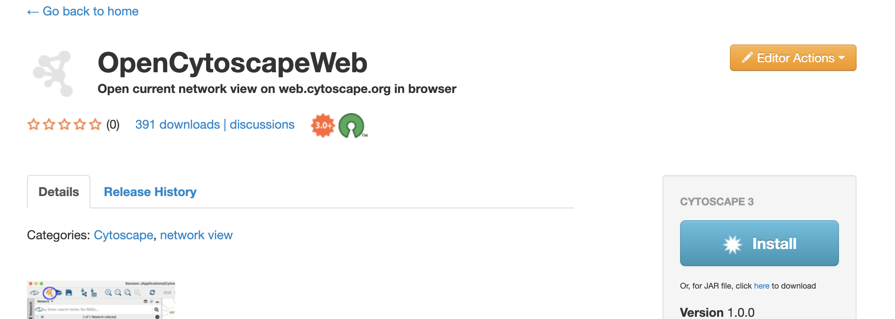
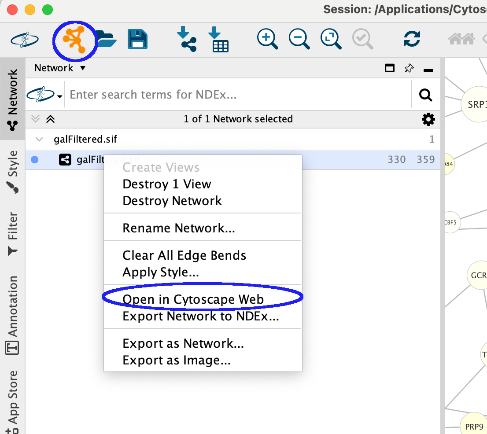
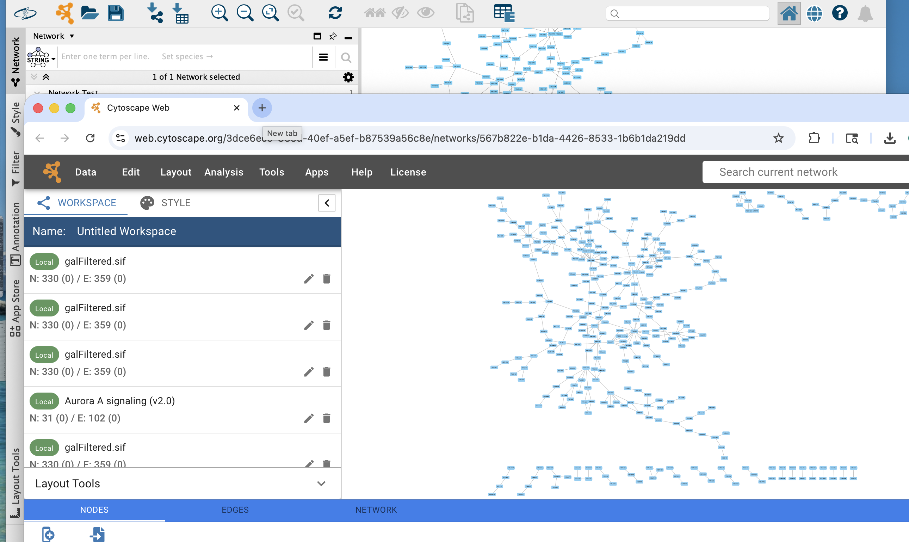

In this exercise, we will use the Open in Cytoscape Web app for Cytoscape to open a network from Cytoscape Desktop directly in Cytoscape Web, a browser-based network visualization tool. The exercise will teach you how to:
To follow this exercise, make sure you have Cytoscape 3.10 or later installed, along with the Open in Cytoscape Web app. You will also need an active internet connection and a default web browser configured on your system.
To install the app:

The toolbar button and the Open in Cytoscape Web context menu item only appear dynamically when a network is active in Cytoscape Desktop — they will not be visible if no network is loaded.
To verify now: if you already have a network open in Cytoscape Desktop, look for the two UI elements shown below — the toolbar button (orange and white icon) in the toolbar, and Open in Cytoscape Web in the right-click context menu of the
No network loaded yet? Proceed to Exercise 1 to load a network and you can see these GUI aspects at that point.

In this exercise, we will load a sample network in Cytoscape Desktop and open it in Cytoscape Web using both available methods: the toolbar button and the right-click context menu.
The Open in Cytoscape Web app works with any network loaded in Cytoscape Desktop. To get started, load any network of your choice. If you don't have one handy, try searching NDEx:
With the network loaded, use the toolbar button to open it in Cytoscape Web.

The same action can also be triggered from the Network panel without using the toolbar.
Before opening a network, the app validates it against size limits to ensure Cytoscape Web can render it reliably. The checks run in this order:
If any check fails, a dialog appears explaining which limit was exceeded along with the actual vs. maximum values. The network will not be opened until the issue is resolved.